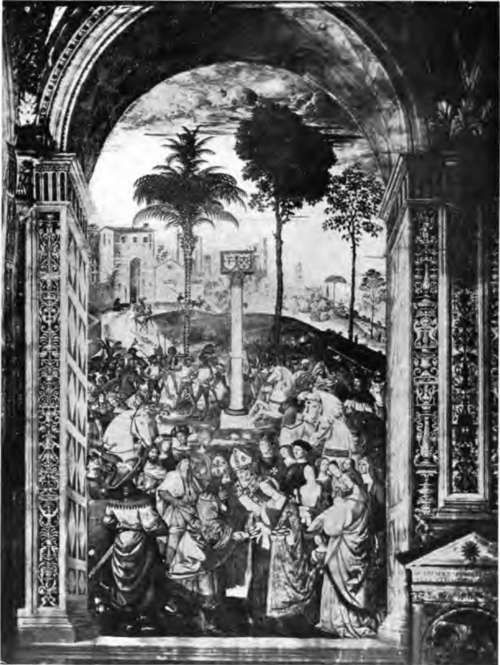

Encaustic Painting
Description
This section is from the book "Mural Painting", by F. Hamilton Jackson. Also available from Amazon: Mural Painting: -1904.
Encaustic Painting
Encaustic is a term applied to a mode of painting in which the medium is wax,. which was generally mixed with the colours, the final process being the "inustion " or Kava-19, the application of heat, to fuse the colours together. The wax most frequently mentioned as used by the painters of antiquity is "Punic" wax, which was merely wax bleached. The process as described by Dioscorides and Pliny was to expose yellow wax to the air, and then boil it in sea-water to which nitre had been added: the whitest part was taken out with spoons and put into a pot of cold water. It was again boiled in sea-water and again put into cold water. After doing this three times it was dried on rushes in the open air either by sun or moonlight.
There were several kinds of encaustic들n the first sticks of coloured wax resins, which were melted by means of heat, were used; in the second they were used cold, softened by the addition of oil, like pastels, and were afterwards worked with heat; and in a third the wax colours were probably used dissolved in an essential oil and applied with a brush. The implements required were듡irst, a colour box with coloured wax pencils; second, a little stove to melt the wax; third, brushes; fourth, instruments of metal, either iron or bronze, having the form of a spatula and called technically " cestrum " and generically u cauteria." In 1847, at S. M믃ard-des-Pr믑 in Vendue, some utensils and materials for encaustic painting were found in a tomb. These consisted of a bronze colour-box, several bronze spatulas (cestra), two instruments of rock crystal, one of which contained gold powder mixed with a gummy substance, two brush handles, a palette made of basalt, and several glass bottles and phials filled with colours and resin. Some of them also contained bees-wax, wax and resin mixed, and a complex mixture of oleic acid and "margarique,,, wax and lamp-black, "no doubt from the acidulation of a neutral oil mixed with the wax." The colours found were blue, sienna earth, and Egyptian blue. At Pompeii, in the street of Stabia, a mortar, pieces of pumice stone, asphaltum, and a mixture of asphaltum and pitch, a piece of yellow ochre, with portions of tar, lamp-black, red and yellow ochre, blue, and two sorts of white were found together.
The colours used by the Egyptians are light yellow ochre, orpiment (sulphate of arsenic) or a vegetable yellow, red ochre (burnt yellow ochre) or vermilion, and three blues드 dark copper blue, indigo, and a pale oxide of copper blue. All the greens are olive in tone and depend on copper for their colour. The whites are듡irst plaster mixed with a gluey medium, a chalk white, the white which was made by grinding up rings of white glass or bracelets of white enamel, and, perhaps, white lead. The blacks are charcoal, oxide of iron, and manganese, or sulphate of lead. Pliny says that the Greeks painted with vermilion (minium, really red lead) pictures which they called monochromes. For a long time they used only four colours든arth of Melos for white, "sil" (attic ochre) for yellow, Pontic "sinopis" for red, and "atra-mentum" for black; but he describes a picture of Venus by Apellgs in which the sea was blue. Blue is found in all the Etruscan paintings in the tombs. At Nola, Psestum, Euvo, Corneto, etc., one sees in the red flesh a sort of red chalk; where yellow is occasionally employed it is a brilliant ochre; the blue is a natural powdered copper colour mixed with an earthy substance듯nited with yellow it makes an agreeable green; but a copper-green has not yet been found. The black is charcoal These are colouring matters which are abundant in the country.
THE BETROTHAL OF FREDERICK III. TO ELEANORA OF PORTUGAL.
Fresco by Pinturricchio, in the Library of Siena Cathedral.
To face page 102.
Vitruvius distinguishes between natural colours which are formed in the places where they are found, and artificially made colours. The natural colours were: (1) Yellow ochre, called by the Latins " sil"; the best, that of Attica, was no longer found in his time; to imitate it the dyers threw on to Eretrian chalk an infusion of dried violets, a detail which one does not quite understand. (2) "Rubrica," Buddie, a red chalk which was only found at Sinope, in the kingdom of Pontus, in Egypt, in the Balearic Isles, in Spain, and in the isle of Lemnos. (3) " Paretonian colour, which he does not describe, but which Pliny says is a fantastic mixture of slime and the foam of the sea solidified; it is the thickest of the white colours. (4) " Meline," which takes its name from the island of Melos. (5) Terre verte (oxide of copper or of silver, with earthy particles), of which the best came from Smyrna. (6) Orpiment, called by the Greeks afxreviKov, our sulphate of arsenic. (7) Sandarac, our minium, oxide of lead. (8) Minium, which was found near Ephesus, and which is our vermilion or sulphuret of mercury. (9) Chrysocolla, without doubt a silicate of copper, which was sometimes replaced, Vitruvius says, by tinting blue with the juice of a plant, our dyer's greenweed. (10) Armenium and indicum, the last, no doubt, our indigo. The artificial colours were (1) Lamp-black (atramentum). (2) Egyptian azure blue (cceruleum). (3) Burnt ochre. (4) Ceruse (basic carbonate of lead). (5) Verdigris, called "aeruca".
(6) Minium (sandaraca), coming from burnt white lead. (7) Purple, which was made from shell fish, a very precious colour, called for that reason " ostrum," or from the roots of madder and of "hysginum," a plant not yet identified, though some think it to be the lichen "roccella tinctorium." Another way of making it was with an infusion of "vaccinium" (myrtle) poured on Eretrian chalk.*
Pliny says that the colours which require a dry, chalky ground are purpurissimum, indicum, coeruleum, melinum, orpiment, appianum, and white lead. The colours found in a shop at Pompeii were analysed for instance, rubrica is red ochre, peroxide of iron mixed with argillaceous earth; cinnabaris is properly dragon's blood, confused by the physicians with minium, which was discovered in 439 a.u.c. by Callias the Athenian by submitting to the action of fire the red sand found in the silver mines (sulphuret of mercury), according to Theophrastus. The name minium was also applied to red oxide of lead. Colours which were called "florid" were supplied to the painter by his employer, on account of their cost듨inium, armenium, cinnabaris, chrysocoUa, indicum, and purpurissimum. ChrysocoUa is generally thought to have been green verditer, carbonate and hydro-carbonate of copper, green and blue; when treated with dyer's greenweed the best rendered exactly the tint of young corn. Under Nero the arena of the circus was once sanded with chrysocoUa when the prince himself, clad in a dress of the same colour, was about to exhibit as a charioteer. Sinopis, named from Sinope, was a brown-red ochre, red oxide of iron. Paretonium, said to be sea foam solidified with slime, was probably either a hydro-silicate of magnesia or steatite, or rhomboidical carbonate of lime. It was in 1809 by M. Chaptal, who found: (1) A claylike terra verte of Verona. (2) Very pure and fine yellow ochre. (3) Red-brown ochre. (4) A sort of white pumice; very white, fine, and close. (5) A frit of dark blue glass, containing oxides of copper, of lime, and of alumina. (6) Another blue a little lighter. (7) A fine rose colour, which he thought was madder.
Continue to: